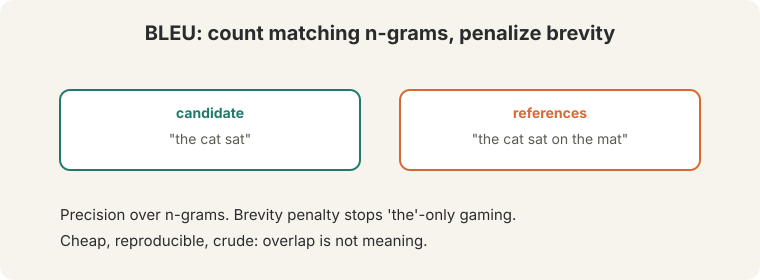
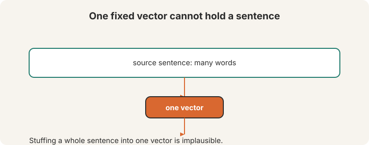
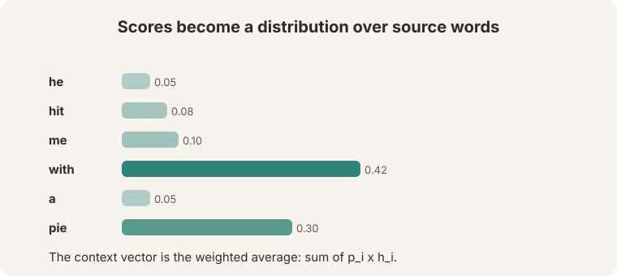
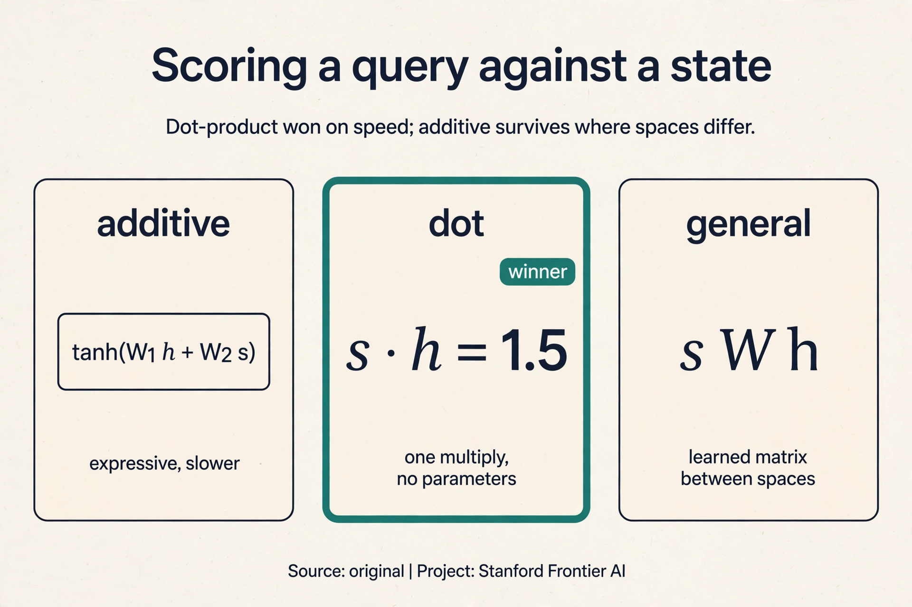
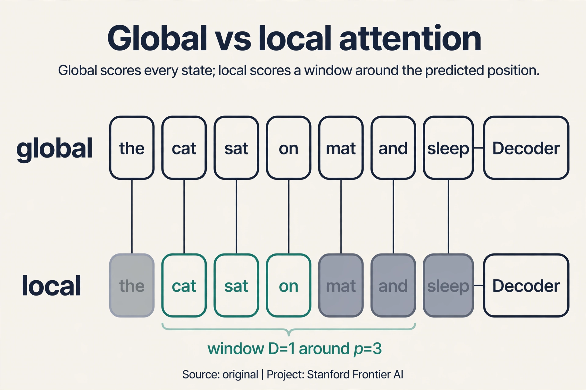
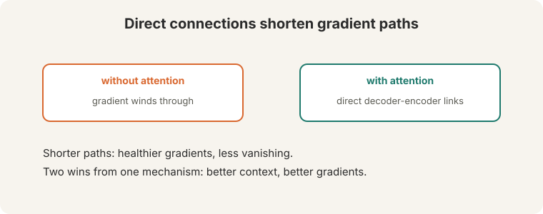

Lecture 7: Attention
Video blocked (ad-blocker or local file mode).
Watch on YouTubeVideo not loading? Watch on YouTube
Original lecture. Christopher Manning introduces BLEU evaluation and Bahdanau attention for neural machine translation.
The problem: how do you grade a translation
Before the new idea, the lecture fixes measurement. BLEU (00:26 ⏱00:26) is the standard automatic metric for machine translation. It compares n-gram overlap between the model’s output and human reference translations.
On this page: Dot vs additive scoring · Scaled dot-product · Luong: local vs global · Attention is not an explanation · Attention in production · Watch and go deeper

Watch it on toys, by hand. Reference: “the cat sat on the mat” (6 words).
candidate A: "the cat sat on the mat" unigram matches: 6/6 = 1.00. bigram matches: 5/5 = 1.00 candidate B: "the the the the the the" "the" appears 2x in the reference -> clipped count 2. 2/6 = 0.33 (clipping stops pure repetition from scoring) candidate C: "the cat sat" precision is high, but length 3 < reference 6 brevity penalty = exp(1 - 6/3) = exp(-1) = 0.37
BLEU multiplies clipped n-gram precisions and applies the brevity penalty.
“The feline rested on the rug” means the same as the reference and scores near zero. Lecture 11 returns to this flaw.
The bottleneck: one vector cannot hold a sentence
Seq2seq stuffs the whole source sentence into one fixed vector. “It still seems a very questionable thing to do,” says the lecture (14:09 ⏱14:09). “It is certainly not like what a human being does.”

A human translator reads the sentence, holds its meaning, then looks back at earlier parts while translating (14:14 ⏱14:14). When writing the French word for “pie”, the translator’s eyes return to “pie”. Seq2seq never looks back. The decoder’s only view of the source is the final encoder state: a keyhole. Long sentences lose detail through it. The network should do what the human does: attend to different source words as needed.
The key question
What if the decoder could look back at every encoder state, on every step, and choose what to read?
Attention: built from zero
On each decoder step, insert direct connections to the encoder (14:51 ⏱14:51). Five steps (Bahdanau et al., 2015):

- Use the decoder’s hidden state as a query to look back (15:20 ⏱15:20). The query says: this is what I need right now.
- Compare it with every encoder hidden state. Compute attention scores: where to look (15:50 ⏱15:50).
- Softmax the scores into an attention distribution: weights that sum to 1.
- Take the weighted average of the encoder states: the context vector (16:25 ⏱16:25).
- Concatenate the context vector with the decoder state, and predict.
Watch it on a toy, by hand. Three encoder states from “he hit pie”: h1(he) = [1, 0], h2(hit) = [0, 1], h3(pie) = [1, 1]. The decoder is about to emit the French word for “pie”. Its state, the query, is s = [1, 0.5].
step 1, scores (dot products of the query with each encoder state): s . h1 = [1,0.5] . [1,0] = 1.0 s . h2 = [1,0.5] . [0,1] = 0.5 s . h3 = [1,0.5] . [1,1] = 1.5 step 2, softmax: e^1.0 = 2.72, e^0.5 = 1.65, e^1.5 = 4.48. total = 8.85 weights = [0.31, 0.19, 0.51] step 3, context vector (weighted average): 0.31 * [1,0] + 0.19 * [0,1] + 0.51 * [1,1] = [0.82, 0.70]
Read the weights. The decoder looks mostly at “pie” (0.51), some at “he” (0.31), little at “hit” (0.19). The context vector [0.82, 0.70] is dominated by the pie state. Concatenated with the decoder state, it drives the next prediction: “tarte”. On the next step the query changes, the weights shift, and the model looks elsewhere.

The general form, beyond translation (25:20 ⏱25:20): a set of values H(1)..H(n), a query vector, scores between query and values, softmaxed into weights, output = weighted average of values. Any problem with “look at the relevant parts” fits this shape.
values: H_1 H_2 H_3 ... H_n query: q scores: s_i = score(q, H_i) weights: a = softmax(s) output: sum over i of a_i * H_i
Subchapter: dot versus additive scoring
“Score(q, H_i)” hides a design decision. Three published answers, on the toy query s = [1, 0.5] and state h3 = [1, 1]:
- Additive (Bahdanau). score = v^T tanh(W_1 h + W_2 s). A small neural net scores the pair. Expressive, slower: the tanh runs per pair.
- Dot (Luong). score = s^T h. No parameters, one multiply. On the toy: 1.5. Fast, and it won wherever dimensions were large.
- General (Luong). score = s^T W h. A learned matrix between the two spaces, for when query and key live in different geometries.
Additive is a network. Dot is arithmetic. The tradeoff is expressivity against speed, and at scale speed won: dot-product scoring has no parameters to learn and costs one multiply per pair.

Subchapter: scaled dot-product, the one-line fix
Plain dot-product has a flaw that only shows at scale. Dot products grow with dimension: at d = 64, typical scores look like [8, 8, 16] instead of [1, 1, 2]. Softmax([8, 8, 16]) saturates to about [0.00, 0.00, 1.00]: one weight near 1, gradients dead. The fix is one division:
score = s^T h / sqrt(d)
[8, 8, 16] / 8 = [1, 1, 2], and the softmax is healthy again. This is scaled dot-product attention (Vaswani et al., 2017). Lecture 8 derives it fully with the variance arithmetic. The point here: the field’s final answer to “how do we score” is dot-product plus one division. Additive scoring survives only in small models and cross-modal settings where the spaces genuinely differ.
Subchapter: Luong’s global versus local attention
Bahdanau attends to every encoder state on every step. Luong asked whether the decoder needs all of them. Two answers:
- Global. Attend to all n states. Same as Bahdanau’s coverage, with dot-product scoring and the context used slightly differently.
- Local. Predict an aligned position p_t, then attend only to states in [p_t - D, p_t + D]. Watch it on a toy: 7 encoder states, predicted position p = 3, window D = 1. The decoder scores only states 2, 3, 4. Cost per step drops from 7 to 3.
Local attention is monotonic alignment made differentiable: the model looks where it expects the translation to be, plus a little around it. For language pairs with similar word order it matches global quality at a fraction of the cost. For pairs with heavy reordering, the window misses and global wins. The choice encodes a bet about word order.

Subchapter: attention is not an explanation
The weights look like explanations: 0.51 on “pie” when predicting “tarte”. Read them that way and you will be misled. Two results:
First, adversarial attention (Jain and Wallace, 2019). For many predictions, very different weight distributions produce the same output. If the weights were the explanation, changing them would change the answer. It often does not. The weights are one factor in a large computation: the values, the decoder state, and the output layer all vote.
Second, correlation is not causation. A high weight means the model drew on that state, not that the word caused the output. The model might attend to “pie” because the decoder state already decided “tarte” and the attention follows. Treat weights as hints for debugging, never as proof.
Why attention helps gradients
Attention solves the bottleneck: “you now no longer” compress everything into one vector (23:06 ⏱23:06). It also helps the vanishing gradient problem (23:22 ⏱23:22). Count the path lengths. Without attention, the gradient from decoder step 20 back to the first encoder word travels through 20 decoder steps plus the encoder chain: roughly 40 chained multiplications. With attention, a direct connection runs from the decoder step to each encoder state: the path is 1 or 2 multiplications.

Humans translating look back at the source sentence as they write. Seq2seq forces the model to memorize the sentence in one vector and never look again. Attention restores the looking-back behavior: each decoder step aims a spotlight at the encoder states it needs. Computation per step. Each decoder step now compares against every encoder state. And the decoder is still sequential: step t waits for step t-1. Attention fixed the bottleneck, not the for loop. Lecture 8 removes recurrence entirely.
Related, not identical. Classical alignment maps source words to target words as a hard preprocessing step. Attention learns soft weights jointly with translation. The weights often look like alignments, but they are learned for the task, not imposed. Cautiously. High weight means the model drew on that state, not that the word caused the output. The weights are one factor in a large computation. Treat them as hints, not proofs.
What is used where: attention in production
- GNMT (Google, 2016). Bahdanau-style attention in the production translation system. Public paper.
- OpenNMT. Luong’s global/local attention, the open-source workhorse of NMT research and deployment. Public.
- T5, BART. Encoder-decoder transformers: cross-attention between decoder and encoder is Bahdanau’s idea inside the transformer. Public.
- Modern decoders. GPT, Llama, and friends use self-attention, not encoder-decoder cross-attention. But cross-attention survives wherever two sequences meet: retrieval-augmented generation, image captioning, speech (Whisper’s decoder attends to the audio encoder). Public architectures.
Encoder states from “he hit pie”: h1 = [1,0], h2 = [0,1], h3 = [1,1]. The decoder state (query) is s = [1, 0.5]. Step 1, score: dot products give [1.0, 0.5, 1.5]. Step 2, weights: softmax gives [0.31, 0.19, 0.51]. Step 3, context: 0.31[1,0] + 0.19[0,1] + 0.51*[1,1] = [0.82, 0.70]. Step 4, predict: concatenate [0.82, 0.70] with the decoder state, run the output layer, sample “tarte”. The spotlight landed on “pie” because the query matched it best. The states are the encoder’s hidden states: the source sentence read left to right (and right to left, if bidirectional). The query is the decoder’s current hidden state: what it has generated so far. Attention is the meeting point of the two histories.
Scaled dot-product, unless you have a reason. It has no parameters, costs one multiply per pair, and trains well: it is the default the field converged on. Pick additive only if the query and key spaces genuinely differ (cross-modal settings) and the extra expressivity pays for its cost. Measure on your dev set. The gap is usually small and the speed gap is not. Saturation. Dot products grow with dimension, the softmax collapses onto one state, and gradients die. That is why the scaled variant divides by sqrt(d): Lecture 8’s one-line fix.
English-to-German. Word orders are similar, so the aligned position predicts well and the window covers what matters. English-to-Japanese reorders heavily (verb-final), so the true alignment often falls outside any small window: local attention misses, global wins. The attention variant encodes a bet about the language pair. Know the linguistics before you pick. Wide enough to cover typical reorderings, narrow enough to matter. D = 5 to 10 is the historical range. Tune it on the dev set like any hyperparameter, and watch whether the predicted positions are actually monotonic.
No. The weight is a hint, not a proof. Adversarial results show different weights can produce the same output, so the weight does not determine the decision. The decoder state may already encode the resolution, with attention following. To test the claim, intervene: mask “street” and see if the pronoun resolution changes. Weights suggest hypotheses. Experiments confirm them. Yes, for debugging. A translation model that never attends to the source is broken, and the map shows it instantly. Use attention as a diagnostic (“is it looking at all?”), not as an explanation (“this is why it decided”).
Track coverage: the sum of attention weights each source word has received so far. Penalize attending again to well-covered words. On the toy: if “pie” already accumulated 0.9 coverage, add a penalty proportional to new weight on “pie”. This is the coverage mechanism (Tu et al., 2016): an explicit memory of what has been translated. It cuts repetition without changing the architecture. Repetition is sometimes correct (“had had”). Coverage penalizes re-reading the source, not re-emitting words: it targets the cause (the spotlight stuck) rather than the symptom (the repeated word). Penalize the mechanism, not the surface.
Mapping back: what attention answers
| Seq2seq pain | Attention answer | How |
|---|---|---|
| One fixed vector must hold the sentence | A fresh context vector per step | The decoder looks back at all encoder states. Nothing is compressed once |
| Detail lost on long sentences | The spotlight moves | Each step weights the relevant words: 0.51 on “pie” when “pie” is needed |
| Gradients vanish over ~40 chained steps | Direct connections | Path length drops to 1-2 multiplications. The signal survives |
The honest price
Three bills. First, compute: each decoder step compares against every encoder state. Second, the decoder is still a for loop: step t waits for step t-1. Attention deleted the keyhole but kept the queue. Lecture 8 deletes the queue. Third, measurement: BLEU counts overlap, not meaning, so a better model can score worse. Lecture 11 takes that problem apart.
Recap: the whole lesson on one screen
- BLEU. Clipped n-gram precision times a brevity penalty. The toys: repetition clipped to 0.33, short guesses penalized by exp(-1) = 0.37. Cheap, reproducible, crude: “the feline rested on the rug” scores ~0.
- The bottleneck. One fixed vector for the whole sentence. “A very questionable thing to do.” Humans look back. Seq2seq cannot.
- The key question. What if the decoder looked back at every encoder state, on every step?
- The mechanism. Query, scores, softmax, weighted average, concatenate, predict. Bahdanau et al., 2015.
- The toy. Query [1, 0.5] against [1,0], [0,1], [1,1]: scores [1.0, 0.5, 1.5], weights [0.31, 0.19, 0.51], context [0.82, 0.70]. The spotlight lands on “pie”.
- The general form. Values plus a query: scores, softmax, weighted average. Any “look at the relevant parts” problem fits.
- Gradients. Direct connections cut the path from ~40 multiplications to 1-2. Shorter paths, healthier gradients.
- The price. Per-step comparison cost. The decoder is still sequential. BLEU measures overlap, not meaning.
Watch and go deeper
Attention, visually explained (3Blue1Brown). Queries, keys, and values as geometry.
Go deeper
- Neural Machine Translation by Jointly Learning to Align and Translate (Bahdanau, Cho, Bengio, 2015). The attention paper.
- Effective Approaches to Attention-based Neural Machine Translation (Luong, Pham, Manning, 2015). Global vs local attention.
- Attention and Augmented Recurrent Neural Networks (Olah and Carter, Distill 2016). Attention drawn as it works.
- Stanford CS224N course site. Slides, assignments, syllabus.
Official sources and further reading
Official: - Lecture 7 video and transcript. - Bahdanau, Cho, Bengio (2015): attention for NMT. - Papineni et al. (2002): BLEU.
Further reading: - Luong, Pham, Manning (2015), “Effective Approaches to Attention-based Neural Machine Translation”: the local/global attention variants. - Vaswani et al. (2017): the transformer. Covered in L08.
Caveats from these sources. BLEU correlates imperfectly with human judgment. L11 revisits this. The attention toy above is an original teaching toy. Attention weights are hints, not explanations.
Connections to the other courses
- This course: L06’s bottleneck is this lecture’s motivation. L08 turns attention into the transformer: attention everywhere, all at once.
- CS336: the transformer architecture. Evaluation lectures generalize BLEU’s limits to all automatic metrics.
- CS229S: alignment algorithms are the classical predecessor of attention.